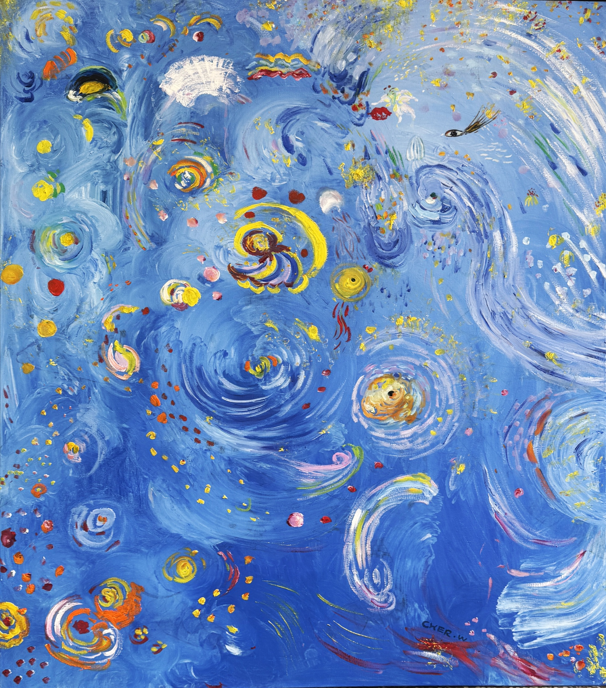

Waltz
华尔兹

- Artwork ID / 作品编号
- KW-O-000003
- Year / 年份
- 2024
- Medium / 媒介
- Oil on canvas / 布面油画
- Dimensions / 尺寸
- 89 × 120 cm (H × W / 高 × 宽)
Waltz explores the rhythm of light, energy, and life through an abstract visual language. Expansive blue tones form a fluid spatial field where swirling brushstrokes, luminous dots, and expressive lines move together like a cosmic dance. Rather than presenting a fixed narrative, the painting invites viewers into an open perceptual space. The spirals and flowing marks evoke galaxies, ocean currents, cellular growth, and the continuous unfolding of life, expressing the endless vitality of nature and the universe.
《华尔兹》以深蓝为底，无数金色、朱红与雪白的漩涡在其间旋转、碰撞、扩散，如水面的涟漪，也如星群的运行轨迹。圆形笔触彼此呼应又各自独立，仿佛在同一支看不见的旋律中起舞。华尔兹的三拍循环与旋转是一种有规律的失衡，也是一种在流动中保持平衡的运动方式。画面中的漩涡没有单一中心，每一个旋涡既是自己的中心，又被周围更大的旋流牵引、卷入彼此的轨道，回应生命在相互作用与运动中不断生成的状态。作品以厚涂与旋转笔触构建动态肌理，蓝色作为统一介质承载所有旋涡，金色、橙色与朱红如跳动的音符点缀其间；画面右上角隐约的眼睛与流星般的睫毛，暗示观看与被观看的意识漂浮于这场宇宙般的舞蹈之中。